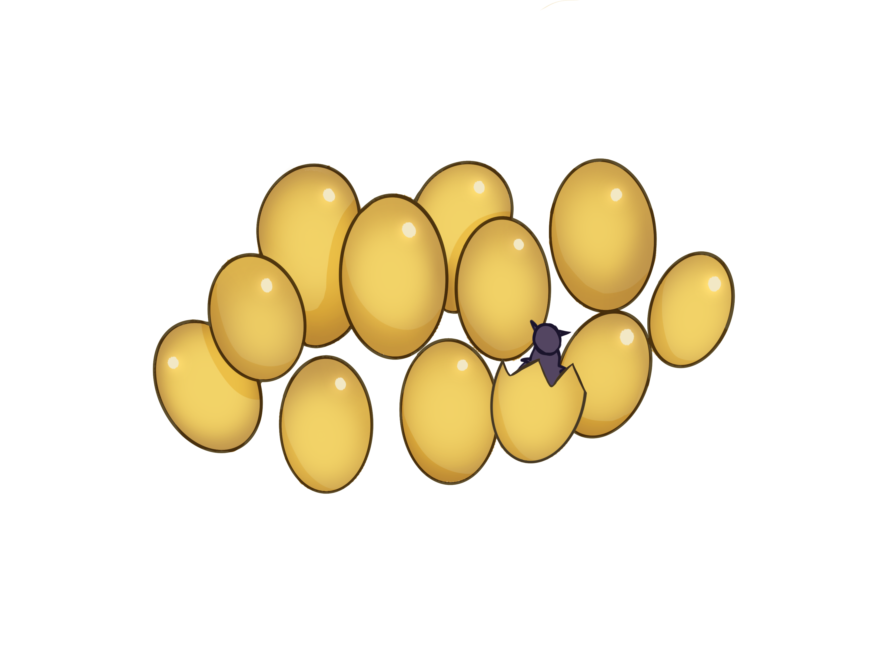
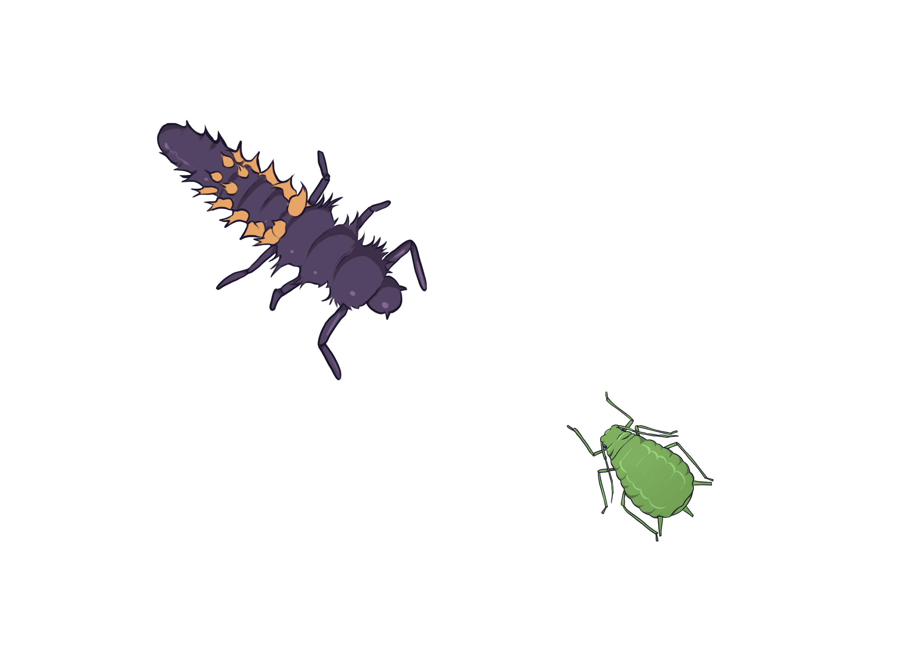
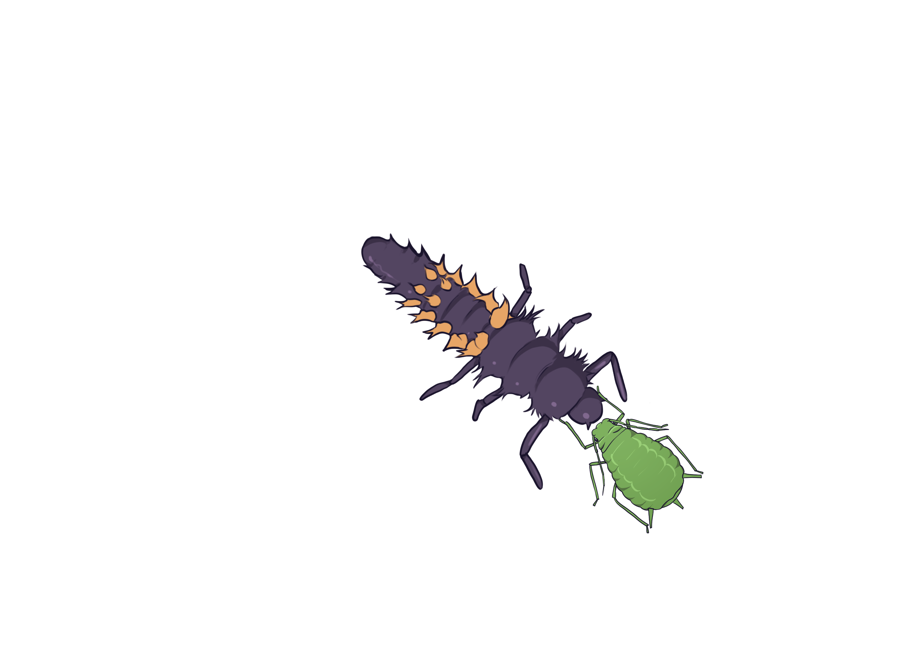
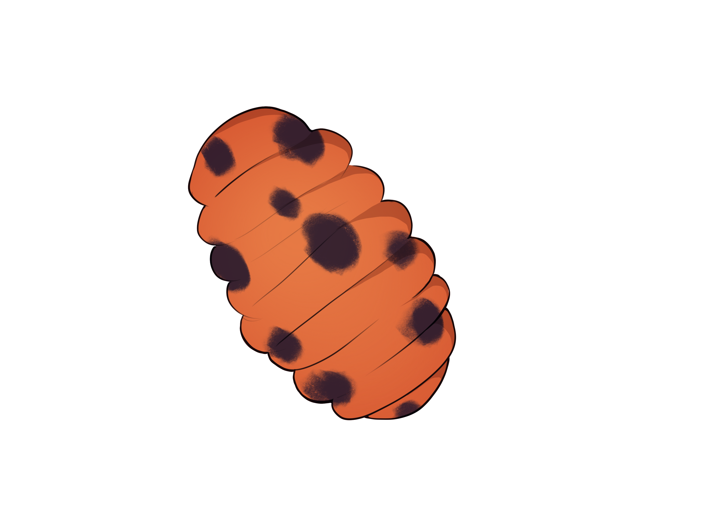
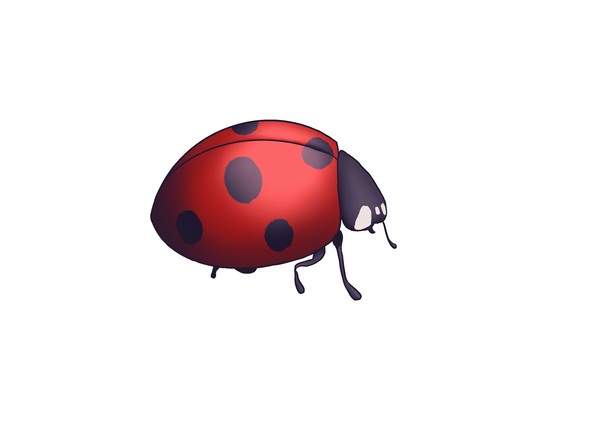

An interactive, informational site about the life cycle of our
favorite red and spotted beetles.
Ladybugs start off hatching from eggs in the form of larvae
click the image to hatch the egg

They may eat the leftover fertilized eggs, but will then spend most of
their eating other bugs, like aphids, scale insects, mites, etc.
click the image to eat the aphid


They also shed their skin many times before becoming a pupae. There,
the ladybug larvae will mature into adults.
click the image to turn into a pupae

When they first hatch, their shells are pale orange and fade into
bright red over time.
click the image to change the shell color
In the winter, ladybugs undergo diapause, a method of hibernation,
during the winter months. Once they find a warm, safe environment,
they can regulate their body temperature and live off their own energy
reserves.
click the image to hibernate

In the spring, they exit hibernation and begin searching for a mate to
start over the process again.
the end! start over or check out the sources below